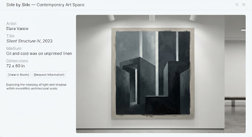
김지원 / KIM JI-WON
무제 (빛과 침묵) [Untitled: Light and Silence], 2025
캔버스에 유채, 130×162cm
ARCHIVE REF. #FA-2025-089 / ON DISPLAY
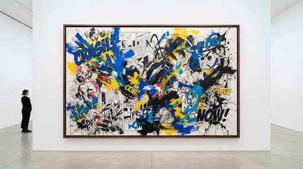
서로 다른 예술이 한 벽에 걸리는 곳
웹툰 · 회화 · 일러스트 · 사진 · 설치 — 100명의 창작자가 함께 구축하는 순수 현대 미술과 연속 예술(Sequential Art)의 물리적·디지털 공존 구역.

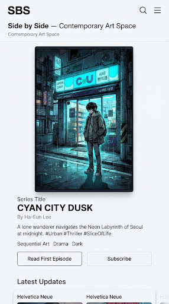
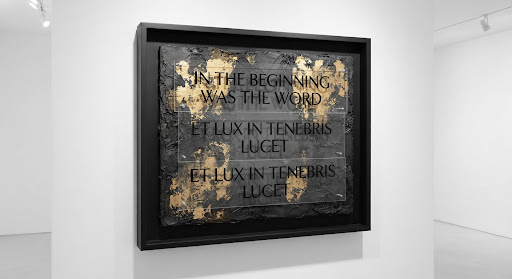
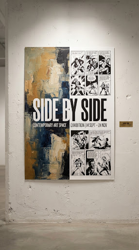
SIDE BY SIDE: SEQUENTIAL ART MEETS FINE ART
대중적인 서사의 호흡을 지닌 웹툰과 응축된 침묵을 품은 순수 회화가 한 공간에서 서로의 시선을 교환합니다. 장르의 위계와 벽을 허물고, 시각 예술이 전하는 가장 본질적인 공존의 순간을 조명합니다.
교회라는 영적 안식처의 원형과 화이트 큐브의 금욕적 질서가 교차하는 본 전시에서는 12인의 웹툰 작가와 12인의 순수 회화 작가가 짝을 이루어 단 하나의 벽을 공유합니다. 칸의 단절과 캔버스의 연속성이 빚어내는 역설적 성스러움을 경험하십시오.
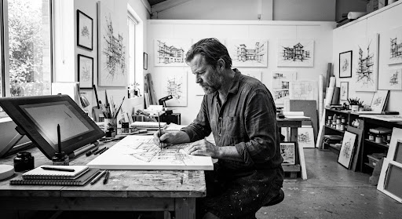
웹툰 작가 & 비주얼 아티스트 (Author of '도시의 밤' / Resident Fellow)
“만화의 칸과 칸 사이, 그 보이지 않는 여백 속에 가장 성스러운 침묵과 호흡이 깃든다고 믿습니다.”
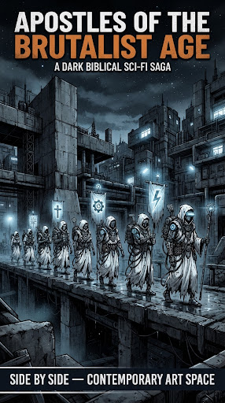
[연재중 / ONGOING]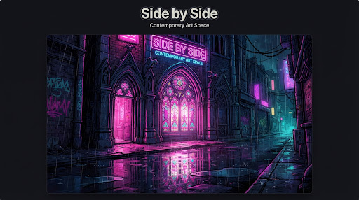
[연재중 / ONGOING]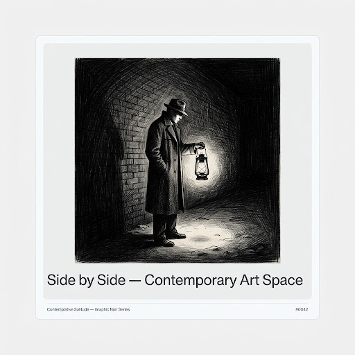
[연재중 / ONGOING]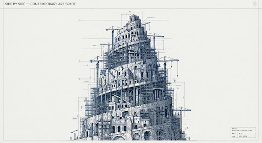
[시즌완결 / HIATUS]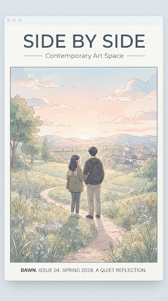
[연재중 / ONGOING]